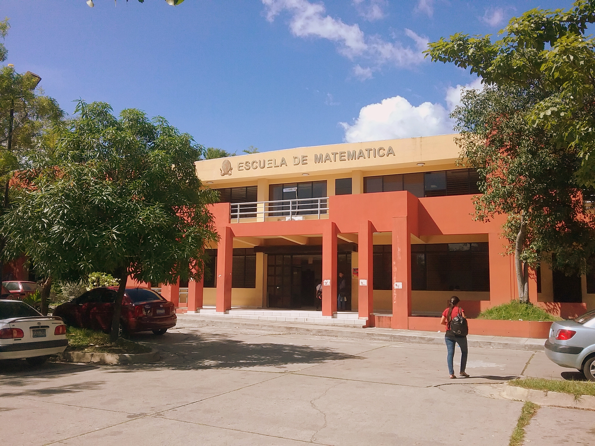
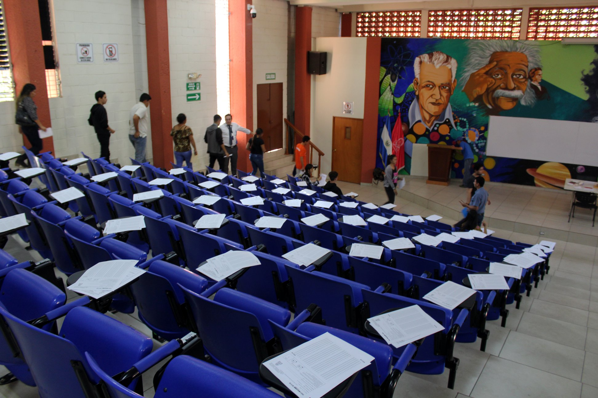

¿Quiénes somos?
La Facultad de Ciencias Naturales y Matemáticas (FCNM) es una de las facultades más destacadas de la Universidad de El Salvador. Ofrece carreras en Biología, Física, Matemática, Química y Estadística, formando profesionales comprometidos con el desarrollo científico y tecnológico del país.
Departamentos
La FCNM cuenta con cinco departamentos académicos que ofrecen programas de licenciatura y posgrado, además de promover la investigación y la vinculación con la sociedad.
- Departamento de Biología Forma profesionales en ciencias biológicas y promueve la investigación en biodiversidad y medio ambiente.
- Departamento de Física Ofrece formación en física teórica y experimental, apoyando el desarrollo científico y tecnológico.
- Departamento de Matemática Desarrolla competencias en matemáticas puras y aplicadas, esenciales para la ciencia y la tecnología.
- Departamento de Química Impulsa la enseñanza y la investigación en química, contribuyendo a la innovación y la industria.
- Departamento de Estadística Especializa en análisis de datos y métodos estadísticos aplicados a diversas áreas del conocimiento.
Galería

Edificio FCNM
Laboratorio FCNM

Auditorium FCNM
Más información de la FCNM.